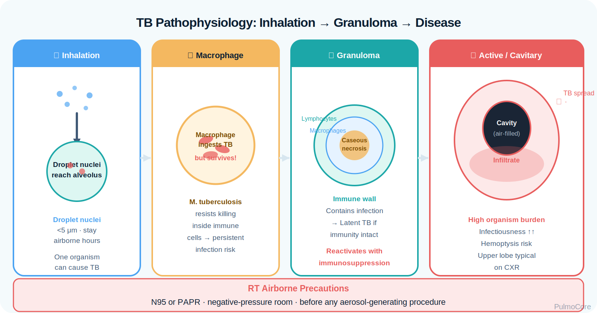
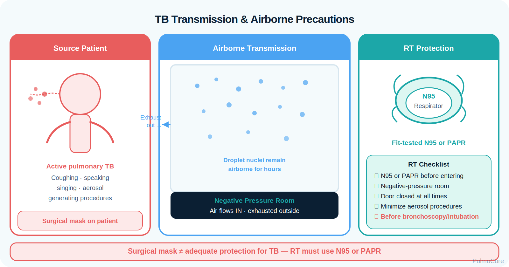
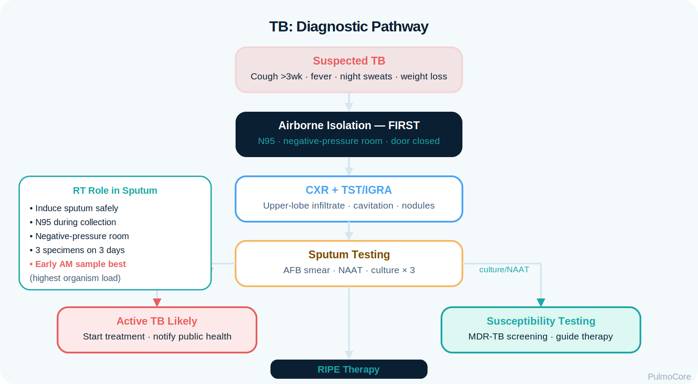

Tuberculosis is an airborne infectious disease caused by Mycobacterium tuberculosis. This module focuses on RT recognition, airborne isolation, diagnostic interpretation, clinical presentation, medication principles, escalation priorities, and safe respiratory care for suspected or confirmed pulmonary TB.
Category Airborne Infectious Lung Disease
Estimated Time 30–40 minutes
Level Core RT Knowledge
Learning Objectives
By the end of this tuberculosis module, learners should connect airborne transmission, host immune response, granuloma formation, cavitary lung disease, infection control, diagnostics, medication adherence, and RT safety decisions.
1. Explain pathophysiology Describe inhalation of droplet nuclei, macrophage response, granuloma formation, latent infection, and reactivation.
2. Differentiate latent and active TB Compare infectious risk, symptoms, chest imaging, sputum findings, and treatment implications.
3. Interpret diagnostics Use TST/IGRA, chest x-ray, AFB smear, NAAT, culture, and drug susceptibility testing appropriately.
4. Protect patients and staff Apply airborne isolation, N95 or PAPR use, negative-pressure room logic, and escalation for respiratory compromise.
Video Overview
2-Minute Tuberculosis Overview
Watch this quick overview before moving into the disease snapshot.
Disease Snapshot
Pulmonary TB spreads through inhaled airborne droplet nuclei. Active pulmonary or laryngeal TB can be contagious, especially when the patient coughs, has cavitary disease, or has positive sputum studies. Latent TB infection means the organism is contained and the patient is not symptomatic or contagious, but reactivation can occur.
What it is: Airborne infection caused by Mycobacterium tuberculosis.
Primary problem: Granulomatous lung infection that may become cavitary and transmissible.
Key diagnostic clue: Positive AFB/NAAT/culture with compatible symptoms or imaging.
Acute danger: Hemoptysis, hypoxemia, respiratory failure, or severe disseminated disease.
RT priority: Airborne isolation first, then oxygenation, ventilation, sputum collection support, and safe aerosol management.
RT Clinical Connection
For RTs, suspected TB is both a respiratory disease and an infection-control emergency. Before aerosol-generating therapy or sputum induction, the RT must think: airborne isolation, fit-tested respirator, negative-pressure room, and source control.
Board Prep Frame
Immediately associate suspected active pulmonary TB with airborne precautions, N95 or PAPR, negative-pressure room, chronic constitutional symptoms, upper-lobe/cavitary findings, sputum AFB testing, and multi-drug therapy with adherence monitoring.
Quick Pre-Check
Start with the core TB safety pattern
A patient arrives with chronic cough, night sweats, weight loss, and possible pulmonary TB. What should the RT prioritize first?
Anatomy & Pathophysiology
TB begins when tiny droplet nuclei are inhaled and reach the alveoli. Alveolar macrophages ingest the organisms, but M. tuberculosis can survive inside macrophages. The immune system walls off infection in granulomas. Infection may remain latent or reactivate later, especially with impaired immunity.

Visual learning: Use this placeholder for a TB pathophysiology graphic showing inhalation → macrophage infection → granuloma → latent containment or active cavitary disease.
Airborne droplet nuclei → alveolar deposition → macrophage infection → granuloma formation → latent containment or active disease → cavitation and airborne spread risk.
What Changes in Pulmonary TB
TB Change
What Happens
Why It Matters
Macrophage infection
Organisms survive inside immune cells.
Creates persistent infection that may be difficult to eradicate.
Granuloma formation
Immune cells wall off infected tissue.
Can contain infection in latent TB.
Caseous necrosis
Tissue destruction develops in granulomas.
May progress to cavitation.
Cavitary lung disease
Air-filled cavities may contain high organism burden.
Increases infectiousness and hemoptysis risk.
V/Q mismatch
Inflamed or destroyed lung regions ventilate poorly.
Can cause hypoxemia in advanced disease.
Danger Sign
Hemoptysis in a suspected TB patient can indicate cavitary disease, airway bleeding, or advanced pulmonary involvement. Assess airway, oxygenation, hemodynamics, and escalation needs.
Click the TB Hotspots
Click each hotspot to reveal how that feature contributes to TB pathophysiology and RT decision-making.
Start here: Click all four hotspots to complete this activity.
0 / 4 hotspots reviewed
Etiology, Transmission & Risk Factors
TB is transmitted when a person with active pulmonary or laryngeal TB expels airborne droplet nuclei. Risk is higher with prolonged indoor exposure, poor ventilation, delayed diagnosis, cavitary disease, and aerosol-generating procedures.

Visual learning: Use this placeholder for an airborne transmission graphic emphasizing negative pressure and respirator protection.
Risk Factor
Why It Matters
RT Teaching Focus
Close/prolonged exposure
Increases inhalation risk.
Ask about household, shelter, correctional, or healthcare exposure.
TB often develops gradually. RT assessment should identify chronic respiratory symptoms, constitutional symptoms, oxygenation status, hemoptysis risk, and signs that the patient may require urgent escalation.
Improvement is usually gradual with medication adherence, not immediate after one bronchodilator treatment.
Important Teaching Point
A patient with suspected active TB should not wait in a shared clinic bay or standard room. Infection-control placement is part of respiratory care.
Diagnostics & Assessment
TB diagnosis combines screening tests, imaging, microbiology, and clinical judgment. The RT often supports safe sputum collection and monitors respiratory status during evaluation.

Visual learning: Use this placeholder for a diagnostics flowchart: suspected TB → airborne isolation → imaging and sputum testing → culture and susceptibility.
High-Yield Diagnostic Tools
Test
What It Tells You
Board/RT Relevance
TST or IGRA
Evidence of immune sensitization to TB.
Supports infection history but does not alone prove active disease.
Chest x-ray/CT
May show upper-lobe infiltrates, nodules, or cavitation.
Compatible imaging raises suspicion and isolation priority.
AFB smear
Acid-fast organisms seen on microscopy.
Fast but less definitive than culture; positive smear increases infectious concern.
NAAT
Detects TB genetic material rapidly.
Useful early test and may identify rifampin resistance depending on assay.
Culture
Confirms organism growth.
Gold standard but slower.
Drug susceptibility testing
Determines medication resistance.
Critical for MDR-TB treatment planning.
ABG and Oxygenation
ABGs are not diagnostic for TB, but they help assess severity when hypoxemia, respiratory distress, or respiratory failure is suspected. Advanced pulmonary involvement may create V/Q mismatch and hypoxemia.
Airborne Isolation & PPE
Suspected or confirmed active pulmonary/laryngeal TB requires airborne precautions. The patient should be placed in an airborne infection isolation room when available, staff should use fit-tested N95 or PAPR, and the patient should wear a surgical mask during transport.
Airborne room Negative pressure helps prevent contaminated air from escaping.
N95/PAPR Protects staff from inhaling droplet nuclei.
Source control Mask patient for transport and limit movement outside the room.
Isolation Decision Activity
A patient with suspected active pulmonary TB needs sputum induction. Which setup is safest?
Severity & Red Flags
The key question is not only whether the patient has TB. The RT must also determine whether the patient is contagious, unstable, bleeding, hypoxemic, or at risk for respiratory failure.
Red Flag
Why It Matters
Hemoptysis
May indicate cavitary disease or airway bleeding.
SpO₂ falling or severe dyspnea
Suggests significant gas exchange impairment.
Altered mental status
May signal hypoxemia, sepsis, CNS involvement, or respiratory failure.
High fever, hypotension, severe weakness
Concern for systemic illness or sepsis.
Known or suspected MDR-TB
Requires strict adherence to public health and specialized treatment planning.
Aerosol procedure without airborne controls
Safety risk for staff and other patients.
Management & Treatment
TB treatment uses multiple medications over an extended period. Respiratory care does not replace anti-TB therapy, but RTs support oxygenation, ventilation, airway clearance only when appropriate, sputum collection, infection control, and patient education.
Medication Principles
Medication/Concept
Why It Helps
RT Relevance
Isoniazid
Core first-line anti-TB drug.
Teach adherence and report adverse effects.
Rifampin
Core first-line anti-TB drug.
Important in standard multidrug therapy and resistance screening.
Pyrazinamide
Used in initial intensive therapy.
Medication history matters when reviewing treatment phase.
Ethambutol
Helps protect against resistance until susceptibility known.
Ask about vision-related adverse effect teaching.
Directly observed therapy
Supports completion and reduces resistance risk.
Board clue: adherence is central to TB control.
Drug susceptibility
Guides regimen when resistance is present.
MDR-TB requires expert/public health coordination.
Suspected Active TB Response Sequence
Select the steps in the best general order for a suspected active pulmonary TB patient in a respiratory care area.
Recognize TB risk from symptoms/exposure history
Place patient in airborne precautions
Use N95/PAPR and limit aerosol exposure
Notify provider/infection prevention per policy
Collect or assist with sputum testing safely
Begin/monitor treatment and adherence plan
Complete the sequence activity to continue.
Escalation & Respiratory Support
Most TB treatment is medical and public-health coordinated, but the RT must escalate when the patient develops hypoxemia, respiratory distress, massive hemoptysis, airway compromise, or respiratory failure.
Support goal: Maintain oxygenation/ventilation while protecting staff from airborne exposure.
Procedure concept: Aerosol-generating care should occur with airborne controls and appropriate PPE.
Board Pearl
When TB is suspected, infection-control actions should not wait for final culture confirmation. Airborne isolation is a priority nursing/RT safety decision.
Respiratory Therapist Role
The RT is central to safe respiratory assessment and procedure planning. The RT must protect themselves and others while assessing oxygenation, ventilation, cough effectiveness, hemoptysis, work of breathing, and response to therapy.
RT Task
What to Assess or Do
Why It Matters
Apply airborne precautions
Confirm negative-pressure room, N95/PAPR, and transport masking.
Prevents airborne transmission.
Assess oxygenation
SpO₂, PaO₂, oxygen device, cyanosis, dyspnea.
Identifies hypoxemia and escalation need.
Assess ventilation
RR, pattern, ABG if ordered, mental status, fatigue.
Detects respiratory failure risk.
Support sputum collection
Obtain quality specimen safely; use aerosol precautions if induced.
Improves diagnostic accuracy while protecting staff.
Educate patient
Cough etiquette, mask during transport, medication adherence, follow-up.
Supports transmission control and cure.
Guided Unfolding Case Study
The Chronic Cough in Room 4
This guided case reveals one clinical stage at a time. Learners make an RT decision, receive feedback, and then continue to the next stage.
Stage 1: Initial Presentation
A 42-year-old patient arrives with a cough for 6 weeks, fever, night sweats, weight loss, and occasional blood-streaked sputum.
RR 24/min
SpO₂ 93% on room air
History Recent shelter exposure
Decision Question: What is the priority RT action?
Stage 2: Diagnostic Workup
Chest imaging shows an upper-lobe cavitary infiltrate. The provider orders sputum testing.
Decision Question: Which diagnostic result most directly supports active pulmonary TB?
Stage 3: Sputum Induction Request
The patient cannot produce sputum. Sputum induction is requested.
Decision Question: What should the RT verify before induction?
Stage 4: Worsening Status
The patient develops increased work of breathing and larger-volume hemoptysis. SpO₂ falls to 86% on room air.
Decision Question: Which response is most appropriate?
Case Wrap-Up
RT Takeaway: Suspected active pulmonary TB requires fast recognition, airborne precautions, safe sputum support, oxygenation assessment, and escalation for hemoptysis or respiratory compromise.
If the patient worsens: falling SpO₂, severe dyspnea, altered mental status, or significant hemoptysis require urgent escalation without abandoning infection-control precautions.
Knowledge Check
Board-Style Practice
Answer each question to complete this activity. Answer choices shuffle each time the lesson opens.
Question 1
Which isolation category is required for suspected active pulmonary TB?
Question 2
Which finding most strongly suggests active pulmonary TB rather than latent TB?
Question 3
Why are multiple anti-TB medications used together?
Question 4
An RT is asked to perform sputum induction on a suspected TB patient. What is the best action before starting?
0 / 4 questions answered
FAQ
Common Tuberculosis Questions
What is the simplest way to understand TB?
TB is an airborne infection that can be contained as latent infection or progress to active disease, most importantly in the lungs.
How is latent TB different from active TB?
Latent TB means the patient is infected but has no symptoms and is not contagious. Active pulmonary TB causes symptoms and may spread through airborne particles.
Why does TB require airborne precautions?
TB spreads through tiny droplet nuclei that can remain suspended in air and be inhaled into the alveoli.
Does a positive TST or IGRA prove active TB?
No. TST and IGRA suggest TB infection or immune sensitization, but active TB requires clinical evaluation, imaging, and microbiology.
Why is adherence so important?
Incomplete or inconsistent therapy can lead to treatment failure, relapse, and drug-resistant TB.
What should the patient wear during transport?
The patient should generally wear a surgical mask for source control during transport, while staff use respiratory protection according to policy.
What is MDR-TB?
MDR-TB is TB resistant to key first-line drugs, requiring specialized treatment and public health coordination.
Summary & Clinical Pearls
Tuberculosis is an airborne infectious disease that may remain latent or become active pulmonary disease. RT priorities include early recognition, airborne isolation, appropriate respiratory protection, safe sputum support, oxygenation/ventilation assessment, and escalation for hemoptysis or respiratory failure.
Must know: Suspected active pulmonary TB requires airborne precautions.
Board pearl: A positive TST/IGRA alone does not prove active disease.
RT pearl: Before sputum induction, verify airborne controls and respirator protection.
Common mistake: Do not wait for final culture before protecting staff and other patients.
Glossary System
Tooltip, searchable glossary, and mastery deck
Searchable Glossary
Terms are stored once and can power inline tooltips, glossary entries, and flashcards.
Glossary Flashcard Mastery Deck
Click the card to flip it. Use Term → Definition or Definition → Term mode. Mark known cards to move them into the completed pile.